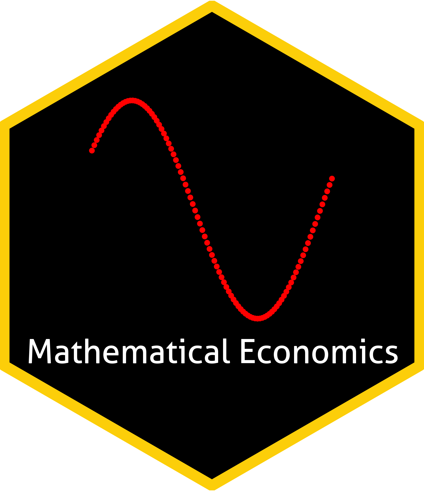

Teaching Experience
These are the logos I designed for the courses.




Istanbul Technical University, Teaching Assistant
- Fall 24 Principles to Microeconomics (Undergraduate)
Problem sessions - Fall 20, 21, 22, 23 Econometrics-I (Undergraduate)
R labs & Problem sessions - Spring 20, 21, 22, 23 Econometrics-II (Undergraduate)
R labs & Problem sessions - Fall 20, 21, 22 Research Methods in Economics-I (Master’s)
R labs & Problem sessions - Spring 20, 21, 22 Research Methods in Economics-II (Master’s)
R labs & Problem sessions - Spring 22 Advanced Econometrics (PhD)
Proofreading R labs - Spring 23 Introduction to Scientific and Engineering Computing (Undergraduate)
Python labs - Fall 21, 23, 24; Spring 25 Introduction to Prog. Lang. Python (Undergraduate)
Python labs - Fall 22 Statistical Methods in Economics (Undergraduate)
R labs & Problem sessions - Fall 21 Mathematical Economics (Undergraduate)
Problem sessions - Spring 21, 25 Intermediate Macroeconomics (Undergraduate)
Problem sessions - Spring-Summer-Fall 20, 21, 22, 23, 24, 25 Economics (Undergraduate)
Exams for ~1500 students
Istanbul Technical University, Organizer
- Summer 23 Math Camp (Incoming PhD and Master’s students)
Proof techniques, real analysis, and linear algebra